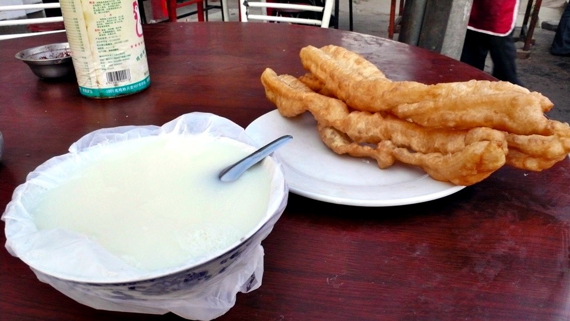
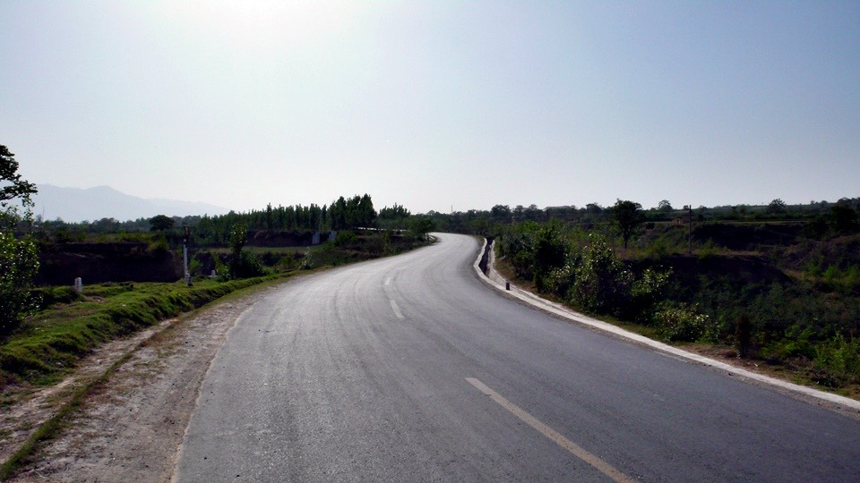
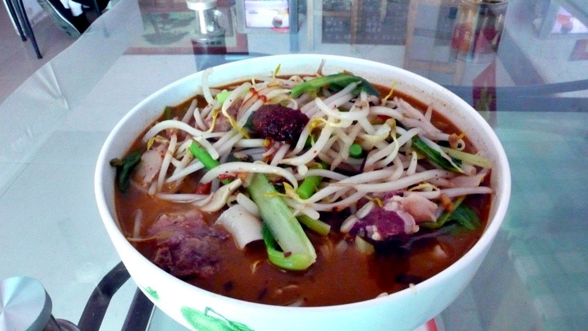
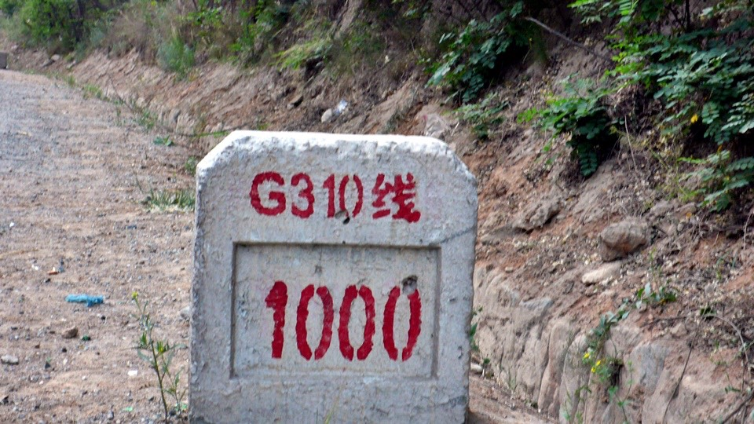
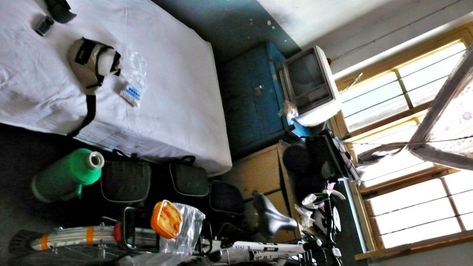
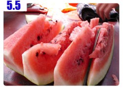

『別進來，裡頭有人！』
一大清早，我在旅館的公共衛生間拉屎的時候，聽到外頭有腳步聲，趕緊先聲奪人。
雖然我的話已經說得這麼清楚，講得如此明白了，外頭的大叔還是把他的頭探進來看了一下。
『都是男人嘛，那就沒關係。』大叔說。
語畢，就走到我面前，把褲子脫掉，在我面前約30公分的地方，
和我相隔著一道50公分高的小矮牆，我和大叔面對面的一起拉屎。
雖然早知道這一天遲早會發生，但真的發生的時候還真叫人措手不及。
沒辦法了，既然這樣，那就一起拉屎吧~_~
用毛巾摀著嘴巴和鼻子，以免臭氣熏天。
大叔不僅不介意拉屎有個伴，而且硬要跟我聊天打發時間。
問我知不知道從這裡到一個陝西的城市有多遠？
我說『不知道，我是外地來的。』三秒鐘將話題結束掉。
結果大叔自顧自的就開始講起來了，他說他要去那邊應試，看有沒有工作機會，
因為有認識的人可以幫他安排工作云云，我一點都不想聽，我拉屎的時候除了會看點雜誌漫畫，
沒有和別人聊天的習慣/_\
好加在該出來的還是出來了，雖然一大早就被驚慌了一下，但無損這一身輕的快感。
吃完豆漿加油條的早餐，付錢的時候老闆說要兩塊。

奇怪，油條三根一塊，豆漿別人都賣五毛，為什麼你賣一塊呢？還是摻水的豆漿，那麼稀。
這只是我心裡的話，沒有真的因為五毛錢而跟老闆理論。
只是在中國生活了十多天，居然會因為區區的五毛錢，而心裡會有種想要計較的感覺。
心態上的轉變真是奇妙呀，大概是因為五毛錢可以買一根冰棒，所以我覺得它很珍貴吧。
只吃了稀薄的豆漿，和三根細細的油條，感覺沒吃什麼正經的東西，
所以離開三門峽前，又去別間早餐店買了五個三毛的豆沙包當路上的點心。
出發後，延續昨天的爬坡路段，但是情況比昨天好，至少上坡和下坡的比例，
從原本累人的四比一。大致變成二比一的程度。
所以整體來說還算輕鬆，只是從三門峽距離西安還有兩百六十公里，看來要分兩天騎才到的了。

而且這些距離的指示牌都是唬人的，常常實際騎的數字跟指示的數字都有十公里左右的誤差。
而且它自己也會吐槽自己，有時候才隔一百公尺，同一個地點的距離指示牌，竟然差了有三十公里。
明明是走在同一條路上，可是路邊的石頭路牌，一下說這一條是209國道，一下子又變成310國道。
今天只要沿著310國道努力的走，等310國道的距離數字變成1000之後，就算完成到西安一半的路程，可以找地方休息了。
雖然一天到不了西安，但還是希望至少可以騎到陝西省。

念書的時候學的地裡都還給老師了，『地無三里平』這句話是在形容哪一個省份的地形呢？
今天不停的在山路中上上下下，翻過一個又一個的山頭，這個地方的路也未免太不平了吧。
中午找一間舒服的店吃午餐，吃飽後休息一小時午休兼躲太陽，已經是每天難得的悠閒時光。
午餐吃了一碗排骨麵，隨著運動量的增加，胃口也漸漸大開，
剛剛才嗑掉五個豆沙包，現在看到一大碗的麵送上來，我還是食指大動的全部都吃個精光，連湯也不剩。

有些地方也會有地圖的告示牌，只是那鬼畫符般的地圖，到底有誰看的懂是在畫什麼~_~

在路過的小村莊中，尋找小販有沒有在賣鳳梨串也是一種新的樂趣，
要是有發現的話，我九成都會停下來，花一塊錢買一串吃，為什麼鳳梨串可以這麼好吃呢(心)
除了水果小販，人力販賣機也是個可以讓人期待的地方。
中國可能因為人真的太多了，所以很多東西都可以用人力來完成。
從出發的第一天起，路上就常常會看到撐著一把大太陽傘，然後放著一台白色冰箱，旁邊坐一個阿婆在顧攤子。
賣的就是一些飲料、汽水或是香菸。
以前看到這個都會視若無睹，飲料那麼貴，我喝水就好了呀，除非沒有水可以喝，或是當天特別累，
不然我很少把錢花在這裡，但是從我發現這種人力販賣機有些居然也有賣冰棒。
(賣的飲料都不冰的冰箱，居然可以賣冰棒？)
我偶爾就會靠進去問一下，有賣冰棍嗎？
要是幸運有，而且還有賣那種五毛白糖冰的話，那我又可以叼著一根冰棒，享受一下短暫的清涼。
我漸漸發覺一種不會迷路的絕招，用了神奇的這一招之後，根本就不用看什麼地圖或是道路指示牌那麼辛苦。
說穿了其實很簡單，只要跟著交通車走就行了。
城市跟城市之間，都會有小巴士通行，而且生意特好，每台都像是擠沙丁魚一樣，
只要看到交通車經過，我都會仔細看他前擋風玻璃所貼的說明。
像是『義馬＜－＞三門峽』之類的，只要有看到，而且交通車的目的地跟你的一樣的話，
那就表示你現在走的路是正確的，可以繼續安心的騎下去。

半路同時和爬坡以及西曬的太陽奮鬥的時候，一轉頭看到左邊有一個至少超過六十歲的老伯伯，
用手推車拉著滿車的廢棄回收品，瓶瓶罐罐的袋子裝了滿車都是，看起來就很重的樣子，
然後手推車後面，有一個年紀和老伯伯相仿的老婆婆，在後頭辛苦的用力幫忙推著車子走。
一個在前，一個在後的拉著手推車爬著和我一樣陡的斜坡。
看到這景像的那一瞬間，我突然覺得自己好幸運，可以騎著腳踏車這麼輕鬆的走，
而且我又身強力壯，載的東西又不多，只要踩的動踏板，小多就會默默的前進，
我還有什麼好抱怨的呢？

看著老伯伯跟老婆婆在夕陽下推車的樣子，讓我有點想停下車去幫忙，但畢竟只是想想而已，
頭轉正，看著前方的道路，我還有我該去的地方，該走的路在等我。

走310國道，從河南進入陝西，沒有任何的分界指示牌，我就這樣傻傻的騎著車，想說怎麼陝西那麼遠，
不是應該要到了才是嗎~_~
翻過另一座山頭的同時，到了一個熱鬧的地方，喘了口氣之後問一下路旁的大嬸。
『這裡是河南還是陝西呀？』
不知不覺，陝西悄悄的到了，我今天的能量也燒光了，牽著車找過夜的地方，看到一間招待所。
是一晚上只要十元的便宜價格，當然是開心的住下來，房間比昨天那間20塊的還要好。

順便趁著太陽還在，把身上的髒衣服給洗一洗，明天還是要穿同一套上路。

晚餐在街上看到一間『薛家老店』，還是祖傳三代的獨家口味，畢竟是跟自己同姓氏，去捧個祖先人情場也好。
點了沒吃過的麵皮，很像是粿仔條切成麵條狀，然後涼拌紅油跟豆芽菜。
因為天氣熱，吃點涼涼的東西挺不錯的，而且出乎意料的還有辣辣的感覺XD
另外再點一個聽發音應該是『包饃』的東西，把烤過的餅，裡頭夾上滷肉剁碎，當成配菜吃。
這裡雖然是在山裡面，但是街上好熱鬧，轉個彎就是我今天爬坡上來的地方，
差一個彎道整個景致差那麼多，誰知道將來的下一個彎道會出現什麼樣的風景呢？
繼續閱讀：5.5 暖身完畢

中國-人民幣－ 1：4.3 台幣
5.4
總計：28元
早餐豆漿＋三根油條2元、五個豆沙包1.5元、午餐排骨麵4元、鳳梨串1元、白糖冰棒一支0.5元、飲料2.5元、晚餐麵皮＋肉餅4.5元、住店10元、網吧一小時2元